Ombra
Ogni versione ha le sue note: cosa è cambiato e come aggiornare.
Un'app gratuita per Windows che copre tutta la tua sessione in VR: full-body tracking per i tracker HaritoraX e compatibili SlimeVR, una chatbox di VRChat con la tua musica e il tuo battito cardiaco, protezione dai crasher e pannelli sul polso.
Ombra gestisce da solo i tracker HaritoraX e compatibili SlimeVR in SteamVR, senza altre app. Costruisce il tuo corpo dai sensori e dal visore, rende fluido ogni tracker e corregge il drift mentre giochi.
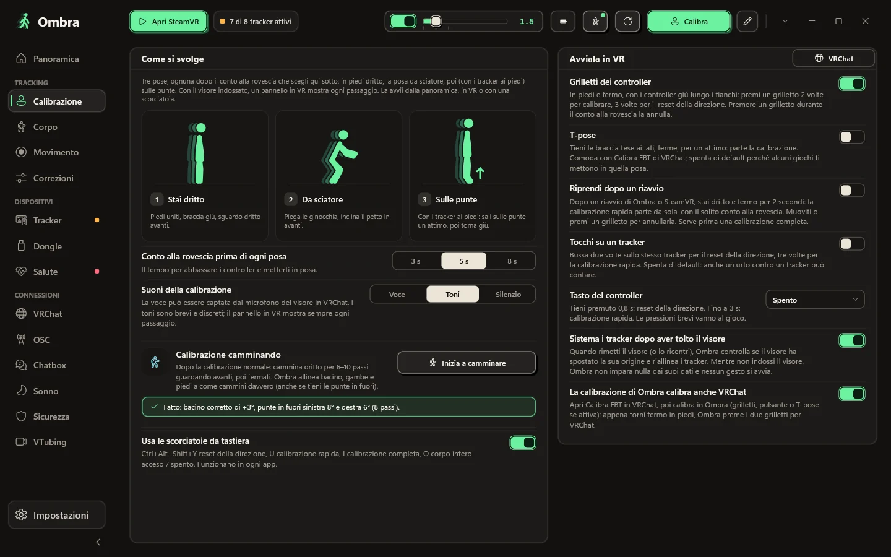
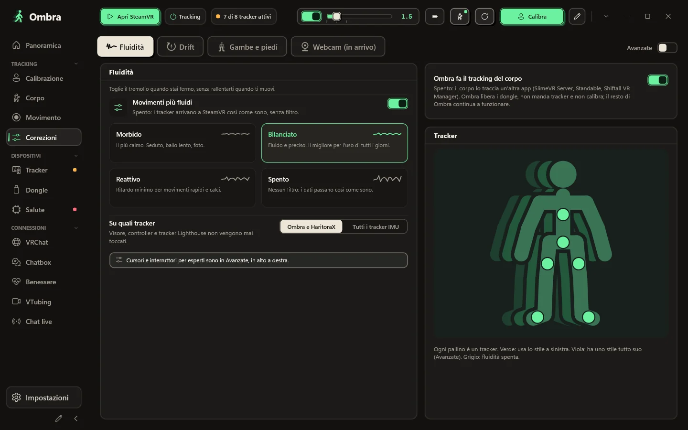
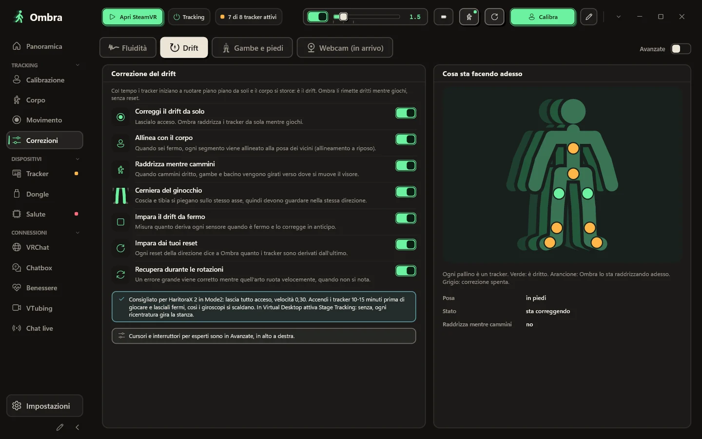
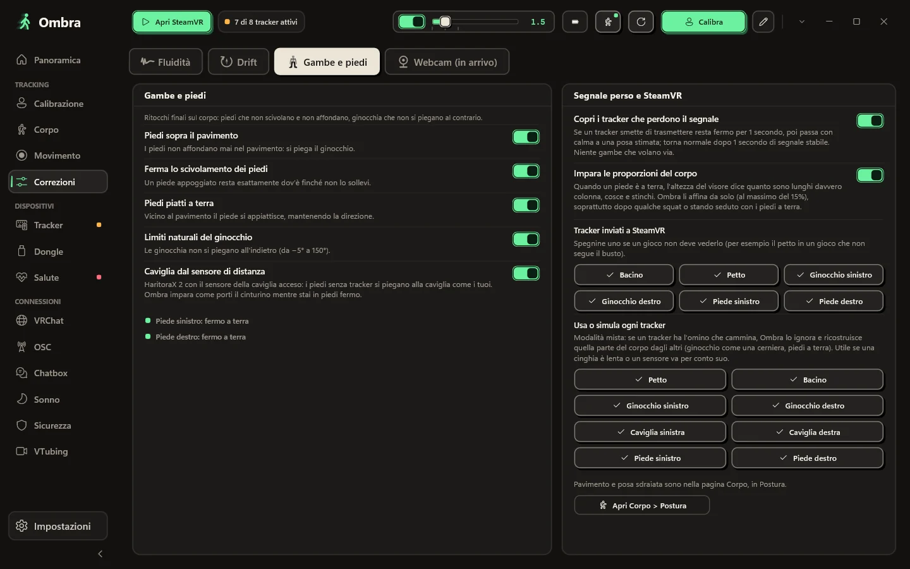
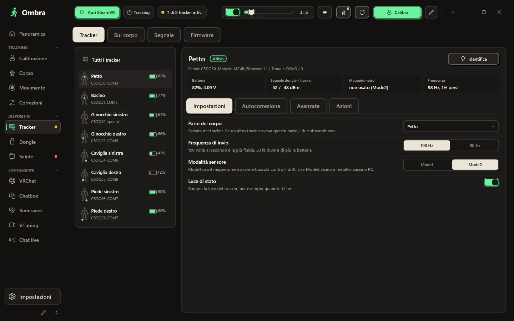
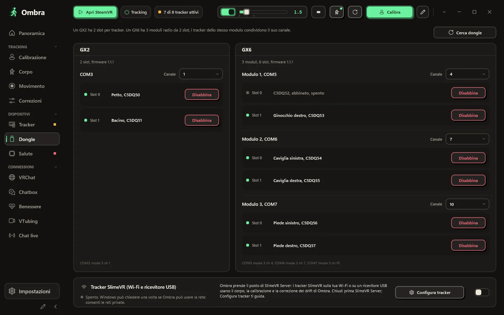
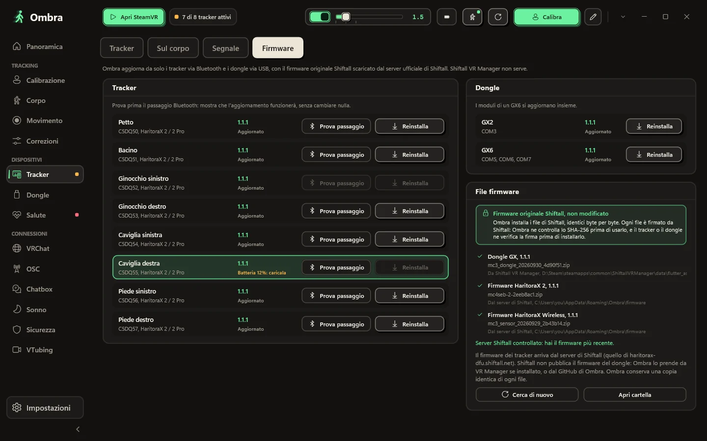
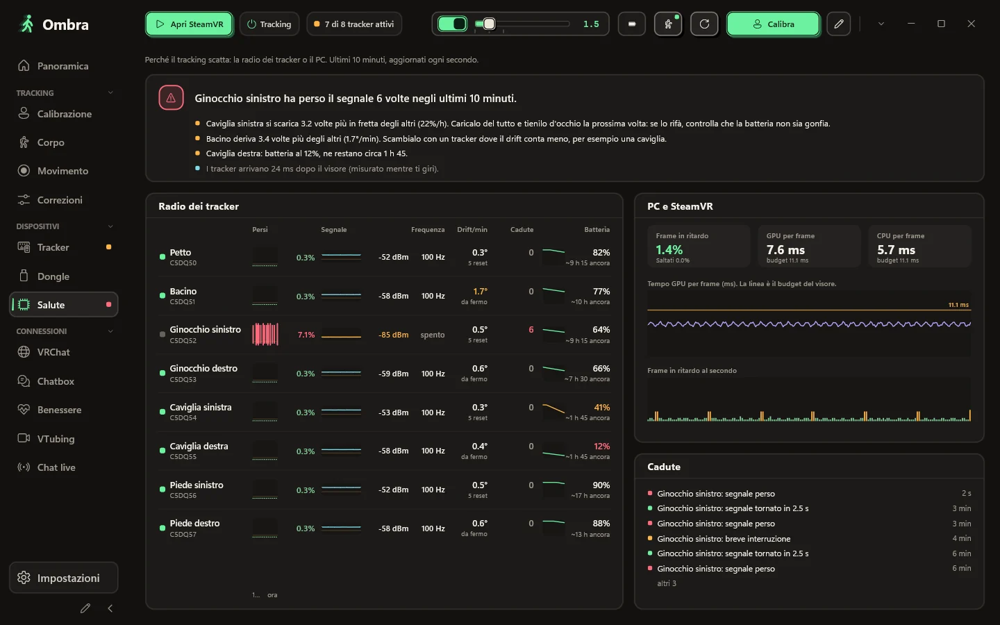
Il corpo che Ombra costruisce dai sensori e dal visore, in vista 3D frontale, laterale o libera. Ogni tracker mostra se è tracciato, simulato o senza segnale.
Stai in piedi dritto, piegati nella posa da sciatore, poi sali sulle punte se hai i tracker ai piedi. Se qualcosa non va, Ombra ti dice quale parte del corpo controllare.
Morbido, Bilanciato, Reattivo o Spento, oppure qualsiasi livello con un cursore. Dai a un singolo tracker il suo stile, per esempio piedi più calmi.
La correzione del drift lavora mentre giochi, e una tabella in tempo reale mostra cosa sta facendo su ogni parte del corpo.
Il tuo corpo resta credibile: i piedi non scendono sotto il pavimento, quelli appoggiati non scivolano e le ginocchia non si piegano mai al contrario.
Numero di serie, firmware, slot del dongle, tensione della batteria, segnale da entrambi i lati, stato del magnetometro e frequenza di invio reale.
Un GX2 ha due slot; un GX6 ha tre moduli radio da due slot ciascuno. Ombra mostra ogni modulo, il tracker in ogni slot e il suo canale.
Aggiorna i tracker via Bluetooth e i dongle via USB con i file firmware originali di Shiftall, senza modifiche.
Quando il tracking scatta, la pagina Salute ti mostra da dove viene il problema: pacchetti persi, segnale e frequenza reale di ogni tracker, accanto ai frame persi da SteamVR.
Scegli un aspetto, cosa mostrare e in che ordine. Ombra la tiene dentro la nuvoletta e non la intasa mai.
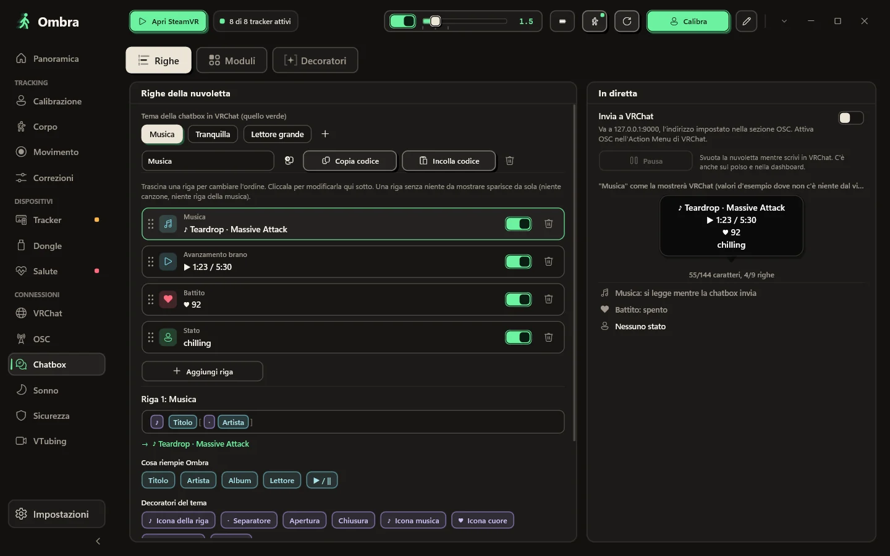
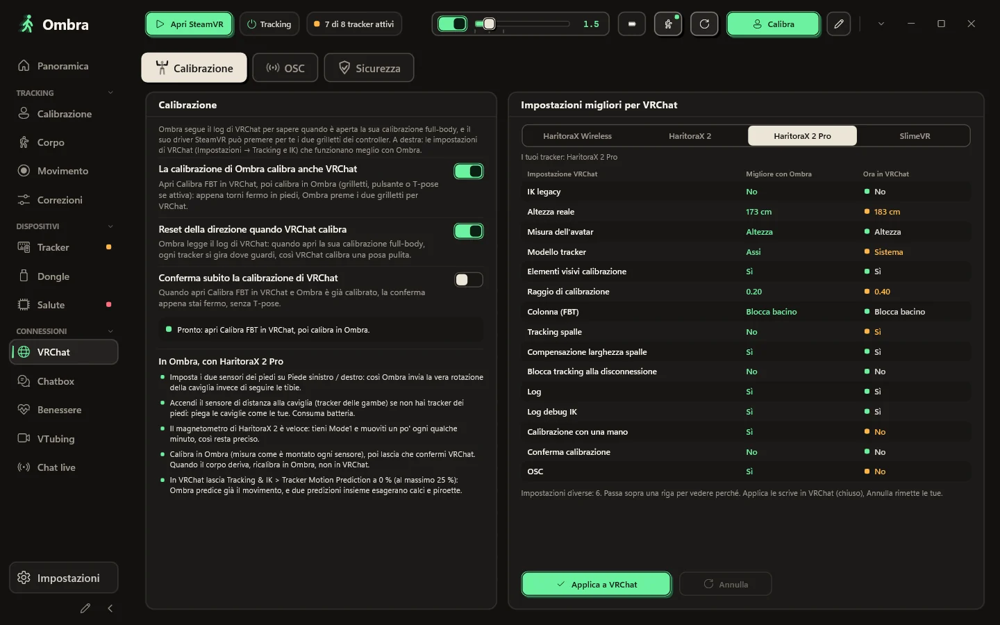
Parti da un aspetto: otto vere nuvolette di VRChat disegnate con le tue righe, dal pulito al kawaii. Accendi e spegni i moduli, spostali su o giù, scegli uno dei dodici divisori che VRChat disegna davvero, oppure metti tutto su una riga.
T7RK-1J85-6, senza server in mezzoLa calibrazione di Ombra calibra anche VRChat, e le impostazioni full-body che VRChat consiglia per i tuoi tracker sono a un clic di distanza, con la possibilità di annullare.
VRChat annota chi entra e quale avatar carica. Ombra legge quel log sul tuo PC, così dopo un crash vedi il probabile crasher, e per nascondere il suo avatar basta un clic.
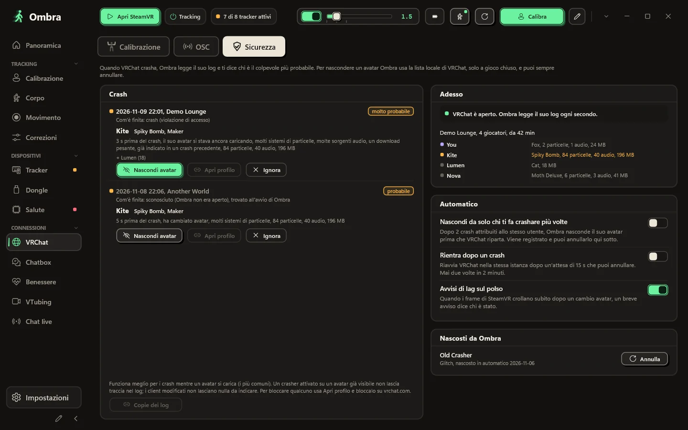
Quello che ti serve mentre giochi è sul polso e nella dashboard di SteamVR.
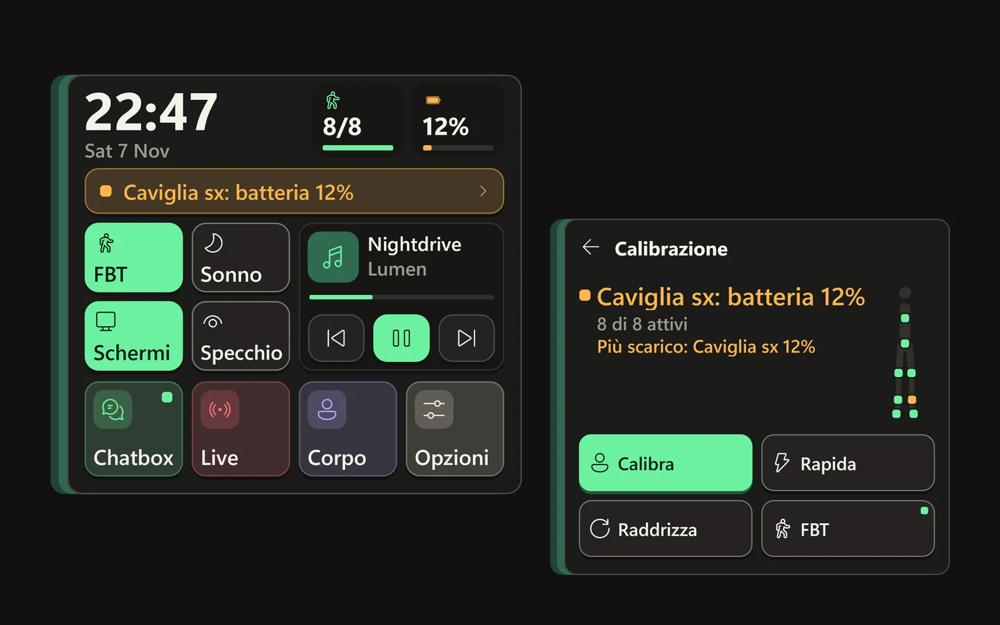
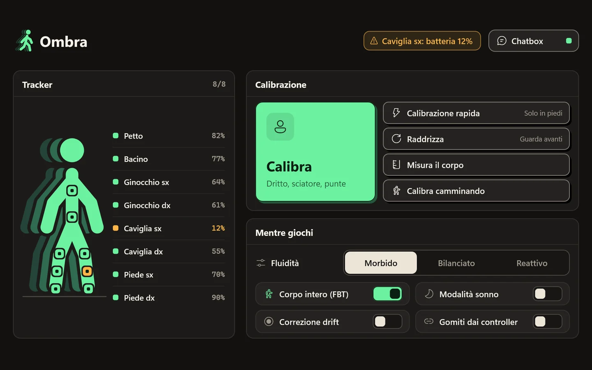
Guarda il polso e compare: un orologio grande, quanti tracker sono attivi e la batteria più scarica, lo stato della calibrazione, quattro interruttori con il nome (corpo intero, sonno, schermi, specchio) e la tua musica. Lì arrivano anche le notifiche del PC. Distogli lo sguardo e sparisce.
Ogni tracker con la sua batteria, grandi pulsanti per calibrare e raddrizzare, e gli interruttori che cambi mentre giochi.
Organizza la barra laterale e scegli i tuoi colori. Con un clic torni all'originale.
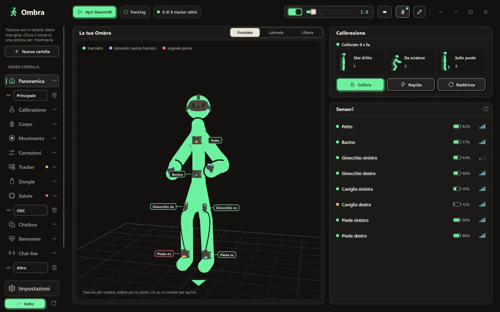
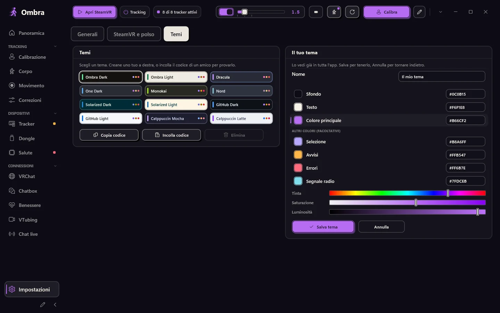
Premi la matita in fondo alla barra: crea cartelle, dagli un nome e trascina voci e cartelle intere dove vuoi.
Impostazioni → Temi → Il tuo tema: scegli sfondo, colore del testo e colore principale, con le barre o i codici esadecimali. Ombra calcola il resto. Lo vedi dal vivo in tutta l'app e nei pannelli in VR; salvalo, o annulla per tornare indietro.
Nessun browser dentro, 12 temi di colore e il tuo. SteamVR avvia Ombra, che resta in attesa nell'area di notifica con un pannello per i tuoi tracker.
I pulsanti che usi di più, nell'ordine che vuoi.
Ombra ti avvisa quando esce una nuova versione e non si aggiorna mai mentre SteamVR è in funzione.
Opzionale: dopo un riavvio, Ombra si calibra da solo appena resti fermo in piedi.
Ecco tutto quello che Ombra fa con internet, e tutto quello che non fa.
Ombra cambia spesso. Qui trovi cosa porta l'ultima versione, preso dalle sue note di rilascio, e cosa è uscito prima.
Ombra
Ogni versione ha le sue note: cosa è cambiato e come aggiornare.
Windows 10 o 11 (64 bit) e SteamVR. HaritoraX 2, 2 Pro o Wireless con un dongle GX, oppure tracker compatibili SlimeVR.
Un solo file, Ombra-Setup.exe. Il pulsante qui sotto scarica sempre l'ultima versione.
I dongle possono essere usati da una sola app alla volta.
Non chiede diritti di amministratore e registra il driver SteamVR. Se Windows ti avvisa, leggi le domande qui sotto.
Accendi i tracker, avvia SteamVR, indossali e premi Calibra.
Ultima versione. Tutte le versioni e le novità
Ogni release passa da Microsoft Defender e viene caricata su VirusTotal: guarda il report.
Se manca qualcosa, chiedi su GitHub.
No. Ombra legge direttamente i dongle, abbina i tracker e aggiorna il firmware con i file originali di Shiftall. Tieni chiuse le altre app per i tracker mentre Ombra è in funzione.
HaritoraX 2, 2 Pro e Wireless con i dongle GX2 o GX6, e i tracker compatibili SlimeVR via Wi-Fi o con un ricevitore USB, per esempio Butterfly e Smol Slime. I tracker a base station come i Vive tracker si possono allineare a un Quest, e Ombra può rendere più fluidi anche altri tracker IMU già presenti in SteamVR. HaritoraX 1 (la versione con i cavi) non è supportato.
Sì. Con un PC, tramite SteamVR, via cavo o wireless. Con VRChat avviato direttamente sul Quest, Ombra invia il tuo corpo via OSC dal PC, senza SteamVR.
L'installer non ha ancora una firma digitale, quindi SmartScreen non lo riconosce. Clicca Ulteriori informazioni, poi Esegui comunque. L'installazione avviene nella tua cartella utente e non servono diritti di amministratore.
L'installazione aggiunge il driver SteamVR di Ombra. I tracker compaiono in SteamVR con i ruoli già impostati (bacino, petto, ginocchia, piedi, gomiti), ed è SteamVR ad avviare Ombra per te.
No. I dispositivi Lighthouse, i visori e i controller non vengono mai modificati. Il driver crea solo i tracker virtuali di Ombra e, solo se attivi l'opzione, rende più fluidi altri tracker IMU.
No. Molti usano Ombra solo per la chatbox, gli strumenti per VRChat e il corpo ricavato dal visore. Scegli Nessun tracker nell'installazione e Ombra non ti chiede mai un dongle.
Sì. Avvia Ombra.exe --demo per avere otto tracker demo su un GX2 e un GX6. La demo non tocca mai le porte COM, il Bluetooth, SteamVR o le tue impostazioni.
L'app e questo sito sono in inglese, italiano, tedesco, francese, spagnolo, portoghese brasiliano, giapponese, coreano, cinese semplificato e russo. Ombra usa la lingua di Windows e puoi cambiarla nelle Impostazioni.
No. Ombra è un progetto indipendente, gratuito da scaricare e usare. Il codice sorgente non è pubblico; su GitHub puoi proporre funzioni, estensioni e traduzioni.
Sì. Ombra è fatta da un solo sviluppatore con strumenti di IA, soprattutto Claude di Anthropic, per ricerca, codice, test e traduzioni. Cosa fa Ombra lo decide lo sviluppatore, che approva ogni versione. Nessun generatore di immagini IA: gli screenshot sono catture reali dell'app. Dentro Ombra usa l'IA solo la dettatura in chatbox, facoltativa: il modello Whisper gira sul tuo PC e la tua voce non esce mai dal computer.
Download di Ombra-Setup.exe in corso
Quando Windows dice di aver protetto il PC, clicca Ulteriori informazioni, poi Esegui comunque. L'installer non ha ancora una firma digitale, quindi SmartScreen non lo conosce.
Se ti trovi bene con Ombra, una stella su GitHub aiuta altre persone a scoprire l'app.
Lascia una stella su GitHub